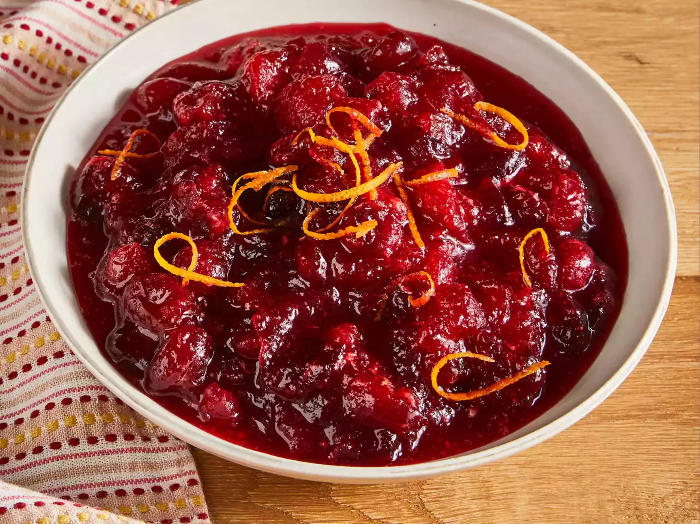

cranberry sauce recipe
to cook an amazing dish of cranberry sauce, this is what you need:
- 12 ounces cranberries
- 1 cup white sugar
- 1 cup orange juice
Instructions:
- Gather all ingredients.
- Dissolve sugar in the orange juice in a medium saucepan over medium heat.
- Stir in the cranberries and cook until they start to pop, about 10 minutes.
- Remove from heat and place sauce in a bowl. It will thicken as it cools.
- Enjoy!
